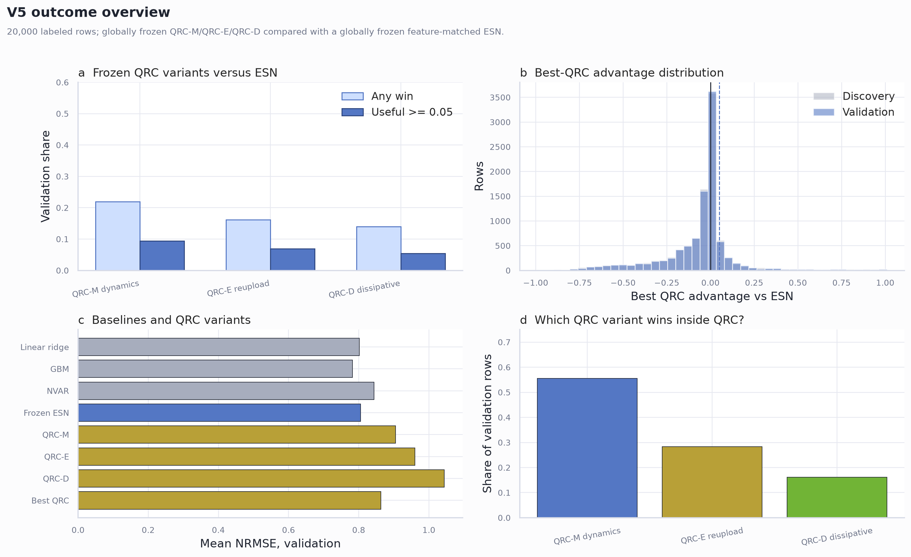
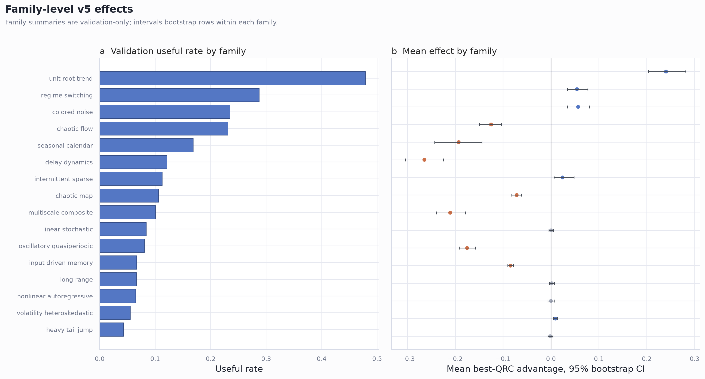
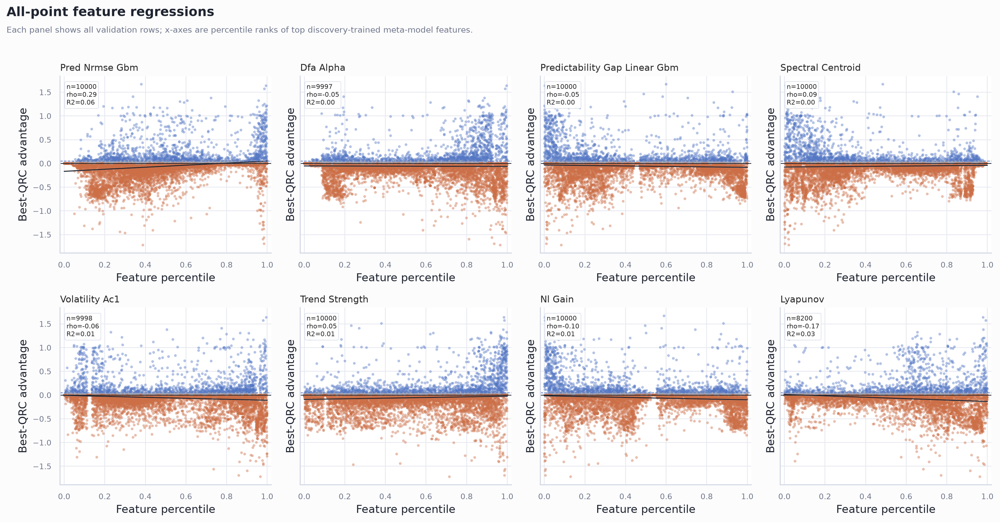
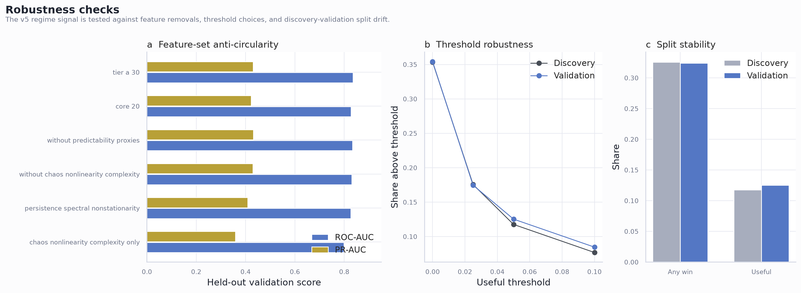
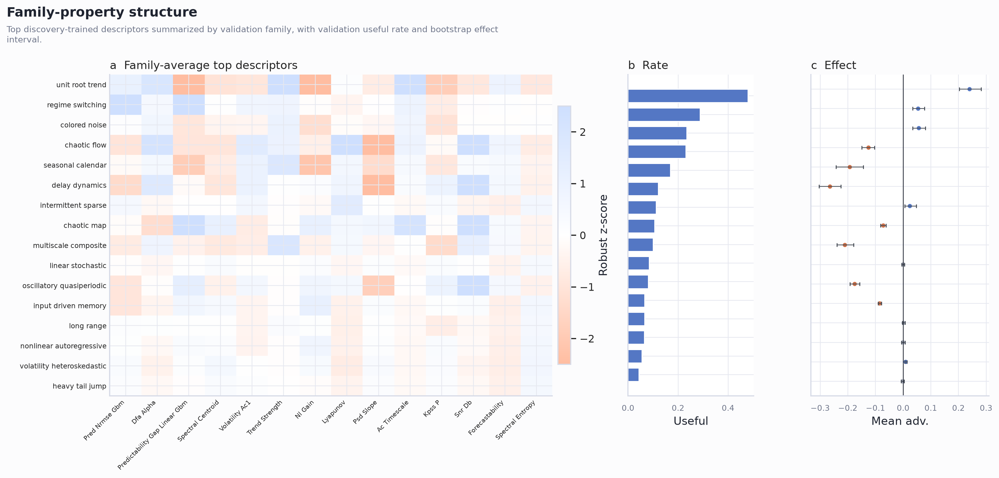

Claims and guardrails
Globally frozen canonical QRC variants do not beat the globally frozen ESN on average, but useful QRC regimes are non-random and measurable. Validation win rate 32.4%; useful rate 12.5%; mean best-QRC advantage -0.058.
QRC usefulness is concentrated in specific dataset-property regimes rather than broad chaos/nonlinearity classes. Top validation family unit_root_trend has useful rate 47.9%; discovery-trained validation AUC 0.836.
The signal is not only a direct predictability-proxy artifact. Without predictability proxies: validation AUC 0.834, PR-AUC 0.432. Without chaos/nonlinearity/complexity: validation AUC 0.831.
The map yields readable high-usefulness pockets that can guide practitioner triage. ext_trend_strength percentile > 0.92 and ext_spectral_centroid percentile <= 0.18 and ext_spectral_centroid percentile > 0.03 (n=420, useful=47.4%, mean_adv=+0.209)
Do not call this broad quantum advantage or a mechanism proof. The primary comparison is protocol-local: globally frozen QRC mechanisms versus a globally frozen feature-matched ESN.
V5 01 Outcome Overview
Variant outcomes, advantage distribution, baseline NRMSE, and best-QRC composition.

V5 02 Regime Map
Validation regime map with all rows, family rates, and best-variant composition.

V5 03 Family Effects
Validation family useful rates and mean-advantage confidence intervals.

V5 04 Feature Regressions
All validation datapoints plotted against top features with regression lines and confidence bands.

V5 05 Meta Model Validation
Discovery-trained meta-model prediction, calibration, residuals, and feature importances.

V5 06 Robustness
Feature-set robustness, threshold robustness, and split stability.

V5 07 Family Feature Matrix
Family-level feature heatmap with useful rates and effect intervals.

Validation family summary
| split | family | n | mean_best_qrc_advantage | mean_ci_low | mean_ci_high | median_best_qrc_advantage | best_qrc_win_rate | best_qrc_useful_rate | useful_rate_ci_low | useful_rate_ci_high | most_common_best_variant |
|---|---|---|---|---|---|---|---|---|---|---|---|
| validation | unit_root_trend | 353 | 0.2402 | 0.2034 | 0.2816 | 0.0188 | 0.5184 | 0.4788 | 0.4249 | 0.5326 | qrc_m |
| validation | regime_switching | 313 | 0.05422 | 0.03443 | 0.07695 | 0 | 0.4824 | 0.2875 | 0.2395 | 0.3355 | qrc_m |
| validation | colored_noise | 315 | 0.05674 | 0.03481 | 0.08043 | 0 | 0.4857 | 0.2349 | 0.1905 | 0.2825 | qrc_d |
| validation | chaotic_flow | 1137 | -0.1252 | -0.1491 | -0.1031 | -0.09102 | 0.2955 | 0.2313 | 0.2058 | 0.2568 | qrc_m |
| validation | seasonal_calendar | 255 | -0.1929 | -0.243 | -0.1441 | -0.1036 | 0.2588 | 0.1686 | 0.1216 | 0.2157 | qrc_m |
| validation | delay_dynamics | 231 | -0.2645 | -0.3038 | -0.2251 | -0.2626 | 0.1558 | 0.1212 | 0.08225 | 0.1688 | qrc_m |
| validation | intermittent_sparse | 142 | 0.02425 | 0.006057 | 0.04799 | 0.0008834 | 0.5352 | 0.1127 | 0.06338 | 0.162 | qrc_m |
| validation | chaotic_map | 2056 | -0.07175 | -0.08214 | -0.06202 | -0.0003909 | 0.285 | 0.106 | 0.09337 | 0.1206 | qrc_m |
| validation | multiscale_composite | 328 | -0.2106 | -0.2388 | -0.179 | -0.1823 | 0.189 | 0.1006 | 0.07012 | 0.1311 | qrc_m |
| validation | linear_stochastic | 345 | 0.0001003 | -0.004658 | 0.005041 | 0.0005612 | 0.5072 | 0.08406 | 0.05797 | 0.1131 | qrc_m |
| validation | oscillatory_quasiperiodic | 746 | -0.1751 | -0.1919 | -0.1574 | -0.1558 | 0.1273 | 0.08043 | 0.06166 | 0.0992 | qrc_m |
| validation | input_driven_memory | 1409 | -0.08471 | -0.09049 | -0.07859 | -0.07306 | 0.171 | 0.06671 | 0.05323 | 0.08091 | qrc_m |
Validation variant summary
| split | variant | label | mean_advantage | median_advantage | win_rate | useful_rate | best_variant_share |
|---|---|---|---|---|---|---|---|
| validation | qrc_m | QRC-M dynamics | -0.1002 | -0.02925 | 0.2197 | 0.0936 | 0.555 |
| validation | qrc_e | QRC-E reupload | -0.1551 | -0.05751 | 0.1618 | 0.0689 | 0.2835 |
| validation | qrc_d | QRC-D dissipative | -0.239 | -0.08982 | 0.1397 | 0.0548 | 0.1615 |
Feature-set robustness
| feature_set | description | n_candidate_features | n_features_used | features_used | discovery_cv_r2 | discovery_cv_mae | discovery_cv_roc_auc | discovery_cv_pr_auc | validation_r2 | validation_mae | validation_roc_auc | validation_pr_auc | validation_brier | top_features | notes |
|---|---|---|---|---|---|---|---|---|---|---|---|---|---|---|---|
| tier_a_30 | All Tier-A dataset descriptors used for the v5 atlas map. | 30 | 30 | ac_timescale,ami_first_min,mem_capacity,r2_linear,nl_gain,snr_db,lyapunov,zero_one_K,spectral_entropy,dom_freq,spectral_flatness,adf_p,kpss_p,n_diffs,dfa_alpha,perm_entropy,sample_entropy,hurst_rs,forecastability,pred_nrmse_gbm,predictability_gap_linear_gbm,ext_volatility_ac1,ext_arch_lm5,ext_recurrence_rate,ext_recurrence_determinism,ext_psd_slope,ext_spectral_centroid,ext_trend_strength,ext_changepoint_count,ext_lz_complexity | 0.4236 | 0.101 | 0.8285 | 0.4073 | 0.4072 | 0.1006 | 0.8357 | 0.4305 | 0.08797 | pred_nrmse_gbm,dfa_alpha,predictability_gap_linear_gbm,ext_spectral_centroid,ext_volatility_ac1,ext_trend_strength,nl_gain,lyapunov | |
| core_20 | Original 20 core measured dataset descriptors. | 20 | 20 | ac_timescale,ami_first_min,mem_capacity,r2_linear,nl_gain,snr_db,lyapunov,zero_one_K,spectral_entropy,dom_freq,spectral_flatness,adf_p,kpss_p,n_diffs,dfa_alpha,perm_entropy,sample_entropy,hurst_rs,forecastability,pred_nrmse_gbm | 0.4007 | 0.1025 | 0.8222 | 0.4032 | 0.3834 | 0.1024 | 0.8276 | 0.423 | 0.08882 | pred_nrmse_gbm,dfa_alpha,nl_gain,ac_timescale,lyapunov,forecastability,spectral_entropy,ami_first_min | |
| without_predictability_proxies | Tier-A descriptors excluding direct predictability proxies. | 26 | 26 | ac_timescale,ami_first_min,mem_capacity,nl_gain,snr_db,lyapunov,zero_one_K,spectral_entropy,dom_freq,spectral_flatness,adf_p,kpss_p,n_diffs,dfa_alpha,perm_entropy,sample_entropy,hurst_rs,ext_volatility_ac1,ext_arch_lm5,ext_recurrence_rate,ext_recurrence_determinism,ext_psd_slope,ext_spectral_centroid,ext_trend_strength,ext_changepoint_count,ext_lz_complexity | 0.4094 | 0.1024 | 0.8218 | 0.4 | 0.3922 | 0.1021 | 0.8339 | 0.4318 | 0.08813 | snr_db,nl_gain,ext_spectral_centroid,dfa_alpha,spectral_entropy,ext_trend_strength,lyapunov,ext_psd_slope | |
| without_chaos_nonlinearity_complexity | Tier-A descriptors excluding chaos, nonlinear, and complexity descriptors. | 20 | 20 | ac_timescale,ami_first_min,mem_capacity,r2_linear,snr_db,dom_freq,adf_p,kpss_p,n_diffs,dfa_alpha,hurst_rs,forecastability,pred_nrmse_gbm,predictability_gap_linear_gbm,ext_volatility_ac1,ext_arch_lm5,ext_psd_slope,ext_spectral_centroid,ext_trend_strength,ext_changepoint_count | 0.4097 | 0.1021 | 0.8245 | 0.4059 | 0.3839 | 0.1032 | 0.8306 | 0.43 | 0.08864 | pred_nrmse_gbm,predictability_gap_linear_gbm,ext_spectral_centroid,dfa_alpha,forecastability,ext_psd_slope,ext_trend_strength,ext_volatility_ac1 | |
| persistence_spectral_nonstationarity | Persistence, memory, spectrum, volatility, and nonstationarity descriptors only. | 17 | 17 | ac_timescale,ami_first_min,mem_capacity,dfa_alpha,hurst_rs,dom_freq,spectral_entropy,spectral_flatness,ext_psd_slope,ext_spectral_centroid,ext_trend_strength,ext_changepoint_count,adf_p,kpss_p,n_diffs,ext_volatility_ac1,ext_arch_lm5 | 0.3679 | 0.1097 | 0.82 | 0.3964 | 0.3642 | 0.1082 | 0.8266 | 0.4089 | 0.08977 | ext_psd_slope,ext_spectral_centroid,ami_first_min,spectral_entropy,ext_trend_strength,dfa_alpha,ac_timescale,ext_volatility_ac1 | |
| chaos_nonlinearity_complexity_only | Chaos, nonlinearity, entropy, recurrence, and complexity descriptors only. | 10 | 10 | nl_gain,lyapunov,zero_one_K,spectral_entropy,spectral_flatness,perm_entropy,sample_entropy,ext_lz_complexity,ext_recurrence_rate,ext_recurrence_determinism | 0.3432 | 0.1126 | 0.7989 | 0.3535 | 0.3243 | 0.112 | 0.7985 | 0.3588 | 0.09415 | nl_gain,spectral_entropy,lyapunov,perm_entropy,ext_recurrence_determinism,sample_entropy,spectral_flatness,zero_one_K |
Rule pockets
| rule | split | n | win_rate | useful_rate | mean_advantage |
|---|---|---|---|---|---|
| ext_trend_strength percentile > 0.92 and ext_spectral_centroid percentile <= 0.18 and ext_spectral_centroid percentile > 0.03 | discovery | 417 | 0.5588 | 0.5204 | 0.2336 |
| ext_trend_strength percentile > 0.92 and ext_spectral_centroid percentile <= 0.18 and ext_spectral_centroid percentile <= 0.03 | discovery | 172 | 0.343 | 0.3081 | -0.1155 |
| ext_trend_strength percentile > 0.92 and ext_spectral_centroid percentile > 0.18 | discovery | 224 | 0.3438 | 0.2054 | -0.1674 |
| ext_trend_strength percentile <= 0.92 and dfa_alpha percentile > 0.66 and dfa_alpha percentile <= 0.93 | discovery | 2015 | 0.3623 | 0.1911 | -0.05761 |
| ext_trend_strength percentile <= 0.92 and dfa_alpha percentile <= 0.66 and ext_volatility_ac1 percentile > 0.65 | discovery | 1704 | 0.3832 | 0.1127 | -0.07215 |
| ext_trend_strength percentile <= 0.92 and dfa_alpha percentile > 0.66 and dfa_alpha percentile > 0.93 | discovery | 570 | 0.08596 | 0.06491 | -0.3296 |
| ext_trend_strength percentile <= 0.92 and dfa_alpha percentile <= 0.66 and ext_volatility_ac1 percentile <= 0.65 | discovery | 4898 | 0.2973 | 0.05022 | -0.0551 |
| ext_trend_strength percentile > 0.92 and ext_spectral_centroid percentile <= 0.18 and ext_spectral_centroid percentile > 0.03 | validation | 420 | 0.5143 | 0.4738 | 0.2086 |
| ext_trend_strength percentile > 0.92 and ext_spectral_centroid percentile <= 0.18 and ext_spectral_centroid percentile <= 0.03 | validation | 177 | 0.3785 | 0.3559 | -0.02049 |
| ext_trend_strength percentile <= 0.92 and dfa_alpha percentile > 0.66 and dfa_alpha percentile <= 0.93 | validation | 2017 | 0.3718 | 0.2062 | -0.04932 |
| ext_trend_strength percentile > 0.92 and ext_spectral_centroid percentile > 0.18 | validation | 216 | 0.2917 | 0.1806 | -0.186 |
| ext_trend_strength percentile <= 0.92 and dfa_alpha percentile <= 0.66 and ext_volatility_ac1 percentile > 0.65 | validation | 1765 | 0.3926 | 0.1184 | -0.0646 |